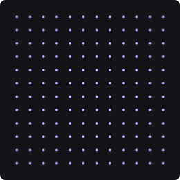
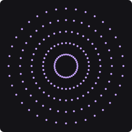
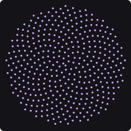
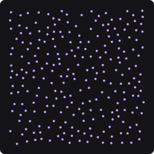
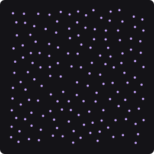
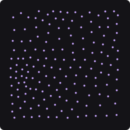
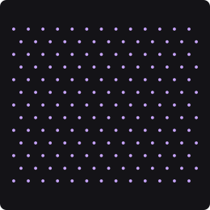
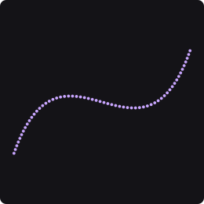
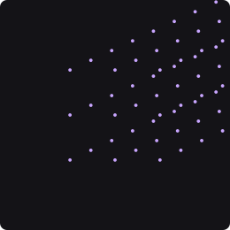

Do primeiro objeto ao milhão
PH2D · Motion Nodes · tutorial 1 — os nós que arranjam as coisas na tela
Um grafo de Motion é uma linha de montagem: um nó faz os objetos, os do meio
mexem neles, e o último mostra. Este tutorial é sobre o primeiro — os dez nós que
decidem onde as coisas ficam. No fim você vai ter dois milhões de objetos se mexendo a
60 quadros por segundo.

Gridlinhas e colunas

Radial Arrayanéis em volta de um centro

Fibonacci Spirala espiral do girassol
Estas imagens não são desenhos. Cada uma é a saída de verdade do nó,
cozinhada pelo mesmo motor que roda no app e gravada em seguida. Se um nó mudar, a figura muda.
1 · Abrir
Cole isto inteiro num terminal. Na primeira vez ele compila (alguns minutos); depois abre em
segundos.
cd /home/enio/Documentos/Projetos/PH2D/Worktrees/line-motion-value && env PH2D_GPU_COOK_DEMO=1 cargo run -p ph2d-host-desktop --release
Abre uma tela escura com uma massa de pontos ondulando. São
2 000 000 de objetos — 1250 linhas por 1600 colunas.
Se a janela abrir vazia, o número da cena está errado: confira que você copiou
PH2D_GPU_COOK_DEMO=1.
2 · O grafo, e o cartão de um nó
Olhe o painel do grafo (a área com os cartões ligados por fios).
Três cartões: Grid (verde, faz os objetos), Oscillator
(azul, faz ondular) e Output (vermelho, mostra).
Aproxime o zoom com a roda do mouse sobre o grafo, até conseguir ler as letras
dentro dos cartões.
Dentro de cada cartão aparecem os controles: um nome à esquerda,
um número à direita, e uma barra preenchida mostrando o quanto ele está alto.
Se os cartões continuarem vazios por dentro, aproxime mais — longe demais
o app esconde as letras de propósito, e só mostra as barrinhas.
Grid
Rows1250
Columns1600
Gap X1.00
Gap Y1.00
ShapeRect
Como se mexe num controle
Arraste em cima da barra: o número anda. Atravessar a largura do cartão vai do
mínimo ao máximo daquele controle — por isso o quanto a barra está cheia é exatamente onde o
número está.
Clique numa linha que mostra uma palavra (como Shape · Rect):
ela troca pela próxima opção, e depois da última volta para a primeira.
Para mover o nó, arraste pelo cabeçalho colorido — o corpo agora é dos
controles.
3 · Mexa na grade
Arraste a linha Rows do cartão Grid para a esquerda, até um número
pequeno (uns 12).
A massa vira uma grade que dá para contar. A tela responde
enquanto você arrasta.
Faça o mesmo com Columns.
Agora são poucas dezenas de objetos.
Arraste Gap X para a direita.
As colunas se afastam. Gap é a distância entre um objeto e o
vizinho, em pixels.
Agora clique na linha Rows, sem arrastar.
A linha vira uma caixa de escrever, com o número já selecionado.
Digite 40 e aperte Enter: são exatamente quarenta fileiras.
Esc desiste e deixa como estava.
Se clicar não abrir caixa nenhuma, aquele controle não é um número — um
que diz On/Off ou o nome de uma opção troca de valor no clique, e é isso mesmo.
Aperte Ctrl+Z algumas vezes.
Volta ao que era. Todo arrasto é um passo que se desfaz.
Se arrastar a barra mover o cartão inteiro em vez do número, você pegou
no cabeçalho — desça um pouco.
Arrastar e escrever respondem a coisas diferentes. O arrasto responde
«um pouco mais» e mostra o resultado enquanto a mão anda; o clique responde
«exatamente isto». É por isso que o arrasto para onde o controle é útil e a caixa aceita
muito além — a coluna digitável até da tabela da seção 6 diz até onde.
4 · Troque a forma do arranjo
A grade é só um dos jeitos. Os outros são outros nós, e trocar é ligar um fio.
Clique com o botão direito num espaço vazio do grafo.
Abre a lista de nós.
Escolha Fibonacci Spiral.
Um cartão novo aparece, solto.
Arraste do pino de saída do Fibonacci (a bolinha na borda direita do cartão)
até o pino de entrada do Oscillator (a bolinha na borda esquerda dele).
O fio muda de dono: agora a espiral é que alimenta a onda, e a tela
mostra a espiral do girassol.
Se o fio não pegar, solte em cima do corpo do cartão de destino —
ele encaixa na primeira entrada livre.
Arraste Count no cartão do Fibonacci.
A espiral cresce e encolhe. Spacing abre o miolo,
Angle muda o desenho inteiro — experimente 137.5 e depois 90.

Scatteraleatório, mas sem amontoar

Poisson Diskdistância mínima garantida

Voronoiespaçado por relaxamento

Latticecolmeia: fileiras desencontradas

Curve Pointsao longo de uma curva

Clonerepete o que chega nele
5 · O milhão
Volte para o Grid (ligue o fio dele no Oscillator outra vez, ou aperte
Ctrl+Z até a espiral sumir).
Suba Rows e Columns até o fim do arrasto.
Centenas de milhares de objetos, e a tela continua fluida — porque o
Grid roda na placa de vídeo, não no processador.
Deixe rodando e olhe o canto.
A cena de abertura tinha 2 milhões. Na placa, esse número custa
3,85 ms por quadro; no processador custaria 195,9 ms — cinquenta vezes mais,
e não caberia num quadro.
Nem todos os dez rodam na placa ainda. Hoje são quatro: Grid,
Fibonacci Spiral, Radial Array e Voronoi. Os outros funcionam igual, só que no processador — e
você percebe quando o número fica muito alto.
6 · O que cada controle faz
Esta tabela é gerada do próprio app: se um nó ganhar um controle novo, ela ganha a linha
sozinha. A faixa é até onde o arrasto vai; onde diz digitável até, a caixa que
abre no clique aceita mais do que o arrasto alcança.
7 · Vá além
Anéis que não fecham. No Radial Array, mexa em Start Angle e
End Angle — em vez de um círculo você faz um leque.
Uma grade recortada. No Grid, clique em Shape e escolha
Circle. A grade continua grade, mas só sobra o que cabe no disco.
Empilhe dois arranjos. Ligue um Grid na entrada do Clone: cada ponto
da grade vira uma fileira de cópias. É assim que se faz muito com pouco.
8 · Se algo não bater
o que você vê
o que é
Cartões vazios por dentro
zoom afastado demais — aproxime até ler as letras
Arrastar move o cartão
você pegou no cabeçalho; a barra fica abaixo dele
Uma linha com uma setinha
é uma seção dobrada: clique para abrir
Um controle que não arrasta
ele está sendo puxado por um fio — o número vem de fora
Clicar não abre caixa
aquele controle não é um número (é um On/Off ou uma lista de opções): o clique troca o valor
O número que você escreveu virou outro
você passou do digitável até; o app trouxe de volta para o maior que aceita
A cena engasga com muitos objetos
aquele nó ainda roda no processador (veja a nota da seção 5)